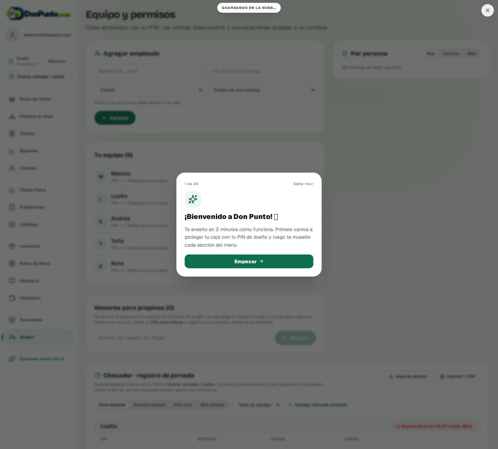
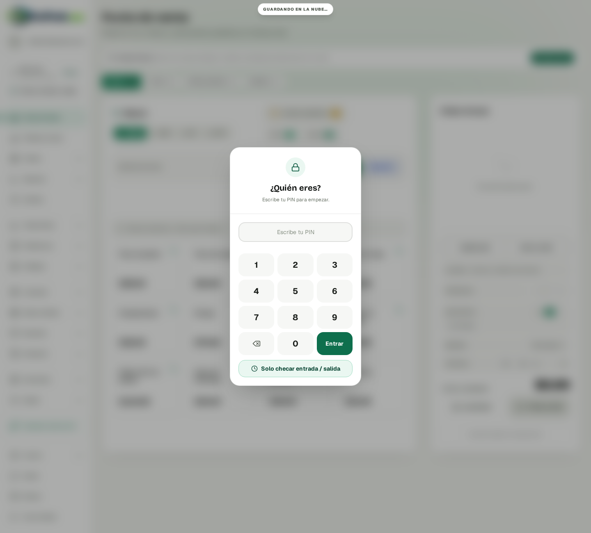
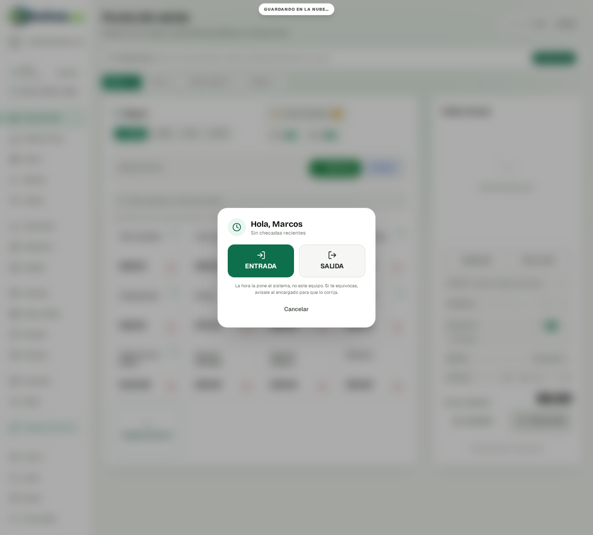
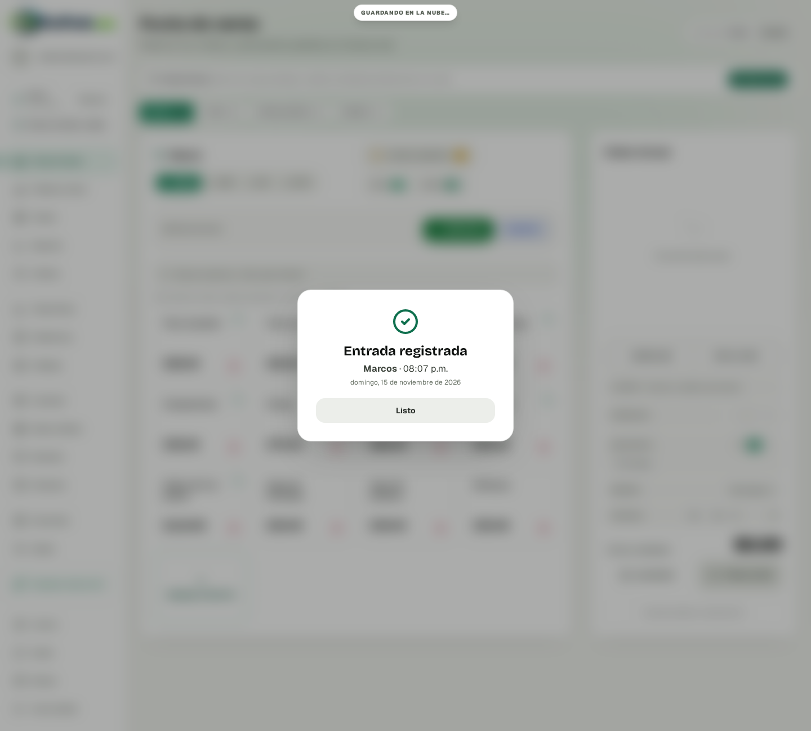
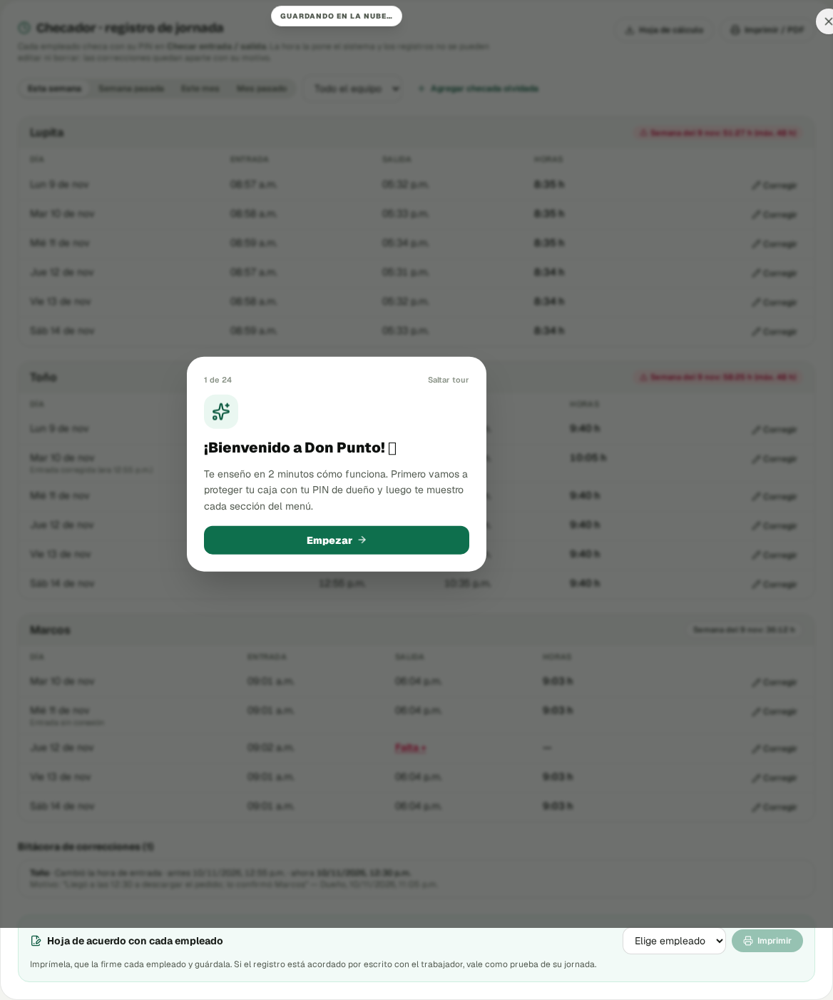
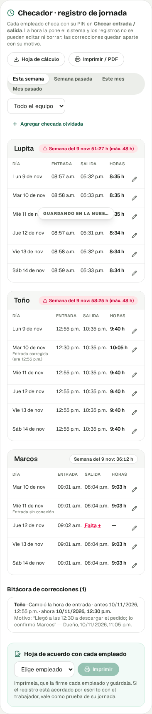
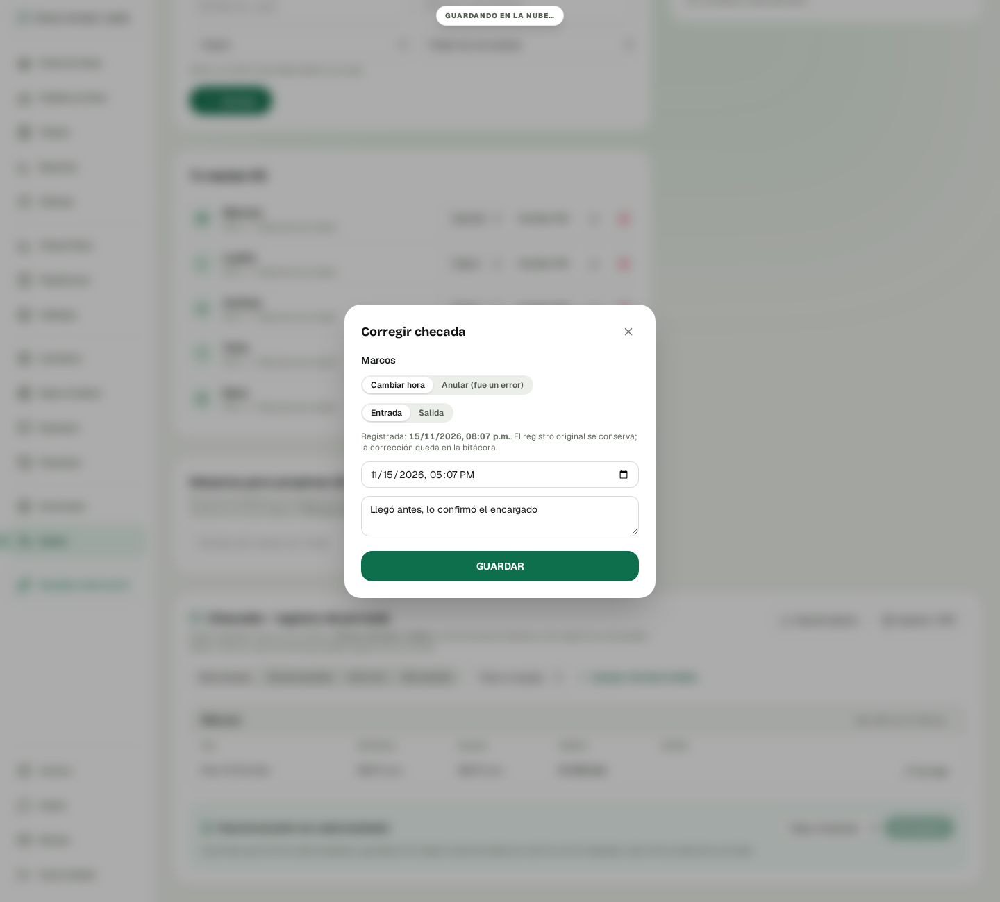

Checador · registro electrónico de jornada
Don Punto · revisión antes de publicar · todos los planes (A1) · checan todos los del equipo (B1)
Aún NO está en donpunto.com — se publica cuando digas «súbelo»Qué hace
- Checar entrada / salida: botón en el menú lateral y en la pantalla «¿Quién eres?». El empleado pone su PIN y toca ENTRADA o SALIDA (se resalta la que le toca). No abre la caja.
- La hora la pone el servidor, no el celular. Los registros no se pueden editar ni borrar (ni con la cuenta del dueño): lo bloquea la base de datos.
- Sin internet se guarda en el equipo y se sube solo al volver; queda marcado «sin conexión».
- Checan todos: cajeros, meseros, gerentes y los meseros para propinas (botón «PIN para checar»; ese PIN no entra al sistema). No cuentan en el límite del plan Básico.
- Reporte en Equipo: por semana o mes, por empleado, horas por día y por semana, en rojo si pasa del máximo legal (48 h en 2026 → 46 h en 2027 → 40 h en 2030).
- Correcciones solo del dueño, siempre con motivo; el original se conserva y todo sale en la bitácora.
- Hoja de cálculo (jornada, totales por semana y bitácora completa) e Imprimir / PDF para la inspección o el contador.
- Hoja de acuerdo para que firme cada empleado (es lo que hace que el registro valga como prueba).
- Sin huella ni foto de la cara → sin datos biométricos.
1. Botón en el menú

Debajo de quién está usando la caja. También sale en el tour de bienvenida.
2. Checar

Pantalla de bloqueo: «Solo checar entrada / salida».

Después del PIN: ENTRADA o SALIDA.

Confirmación con la hora del sistema; se cierra sola.
3. Reporte (Equipo)
Semana de ejemplo: Lupita y Toño pasan de 48 h (rojo), a Marcos le falta una salida («Falta +»), una entrada sin conexión y una corrección en la bitácora.


Celular.

Corregir: cambiar hora o anular, con motivo obligatorio.
4. Documentos
La hoja de acuerdo es un formato de referencia (lo dice al pie): que la revise un contador o abogado laboral, sobre todo cuando salgan las reglas de la STPS.